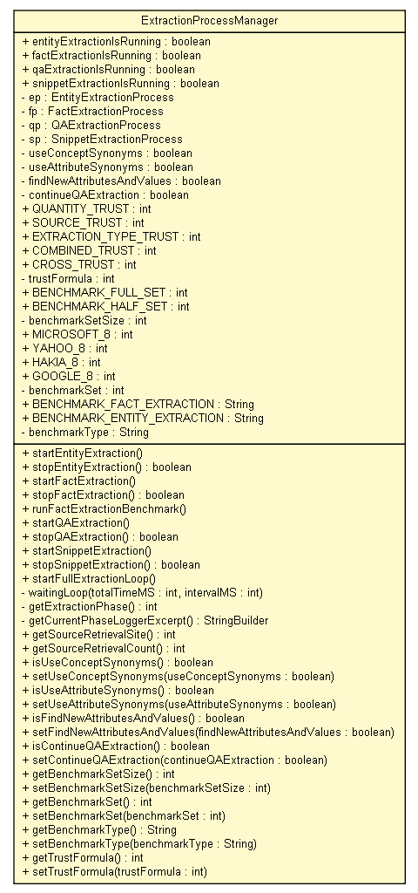

tud.iir.extraction
Class ExtractionProcessManager

java.lang.Object
 tud.iir.extraction.ExtractionProcessManager
tud.iir.extraction.ExtractionProcessManager
public class ExtractionProcessManager
- extends java.lang.Object
The ExtractionProcessManager manages the entity and the fact extraction
process.
| Methods inherited from class java.lang.Object |
clone, equals, finalize, getClass, hashCode, notify, notifyAll, toString, wait, wait, wait |
entityExtractionIsRunning
public static boolean entityExtractionIsRunning
factExtractionIsRunning
public static boolean factExtractionIsRunning
qaExtractionIsRunning
public static boolean qaExtractionIsRunning
snippetExtractionIsRunning
public static boolean snippetExtractionIsRunning
ep
private static EntityExtractionProcess ep
fp
private static FactExtractionProcess fp
qp
private static QAExtractionProcess qp
sp
private static SnippetExtractionProcess sp
useConceptSynonyms
private static boolean useConceptSynonyms
useAttributeSynonyms
private static boolean useAttributeSynonyms
findNewAttributesAndValues
private static boolean findNewAttributesAndValues
continueQAExtraction
private static boolean continueQAExtraction
QUANTITY_TRUST
public static final int QUANTITY_TRUST
- See Also:
- Constant Field Values
SOURCE_TRUST
public static final int SOURCE_TRUST
- See Also:
- Constant Field Values
EXTRACTION_TYPE_TRUST
public static final int EXTRACTION_TYPE_TRUST
- See Also:
- Constant Field Values
COMBINED_TRUST
public static final int COMBINED_TRUST
- See Also:
- Constant Field Values
CROSS_TRUST
public static final int CROSS_TRUST
- See Also:
- Constant Field Values
trustFormula
private static int trustFormula
BENCHMARK_FULL_SET
public static final int BENCHMARK_FULL_SET
- See Also:
- Constant Field Values
BENCHMARK_HALF_SET
public static final int BENCHMARK_HALF_SET
- See Also:
- Constant Field Values
benchmarkSetSize
private static int benchmarkSetSize
MICROSOFT_8
public static final int MICROSOFT_8
- See Also:
- Constant Field Values
YAHOO_8
public static final int YAHOO_8
- See Also:
- Constant Field Values
HAKIA_8
public static final int HAKIA_8
- See Also:
- Constant Field Values
GOOGLE_8
public static final int GOOGLE_8
- See Also:
- Constant Field Values
benchmarkSet
private static int benchmarkSet
BENCHMARK_FACT_EXTRACTION
public static java.lang.String BENCHMARK_FACT_EXTRACTION
BENCHMARK_ENTITY_EXTRACTION
public static java.lang.String BENCHMARK_ENTITY_EXTRACTION
benchmarkType
private static java.lang.String benchmarkType
ExtractionProcessManager
public ExtractionProcessManager()
startEntityExtraction
public static void startEntityExtraction()
stopEntityExtraction
public static boolean stopEntityExtraction()
startFactExtraction
public static void startFactExtraction()
stopFactExtraction
public static boolean stopFactExtraction()
runFactExtractionBenchmark
public static void runFactExtractionBenchmark()
startQAExtraction
public static void startQAExtraction()
stopQAExtraction
public static boolean stopQAExtraction()
startSnippetExtraction
public static void startSnippetExtraction()
stopSnippetExtraction
public static boolean stopSnippetExtraction()
startFullExtractionLoop
public static void startFullExtractionLoop()
waitingLoop
private static void waitingLoop(int totalTimeMS,
int intervalMS)
getExtractionPhase
private static int getExtractionPhase()
- Find out in which extraction phase the extraction loop is at the moment.
- Returns:
- The phase number.
getCurrentPhaseLoggerExcerpt
private static java.lang.StringBuilder getCurrentPhaseLoggerExcerpt()
- Get an excerpt of the logger of the phase that is currently active.
- Returns:
- An excerpt of the logs.
getSourceRetrievalSite
public static int getSourceRetrievalSite()
getSourceRetrievalCount
public static int getSourceRetrievalCount()
isUseConceptSynonyms
public static boolean isUseConceptSynonyms()
setUseConceptSynonyms
public static void setUseConceptSynonyms(boolean useConceptSynonyms)
isUseAttributeSynonyms
public static boolean isUseAttributeSynonyms()
setUseAttributeSynonyms
public static void setUseAttributeSynonyms(boolean useAttributeSynonyms)
isFindNewAttributesAndValues
public static boolean isFindNewAttributesAndValues()
setFindNewAttributesAndValues
public static void setFindNewAttributesAndValues(boolean findNewAttributesAndValues)
isContinueQAExtraction
public static boolean isContinueQAExtraction()
setContinueQAExtraction
public static void setContinueQAExtraction(boolean continueQAExtraction)
getBenchmarkSetSize
public static int getBenchmarkSetSize()
setBenchmarkSetSize
public static void setBenchmarkSetSize(int benchmarkSetSize)
getBenchmarkSet
public static int getBenchmarkSet()
setBenchmarkSet
public static void setBenchmarkSet(int benchmarkSet)
getBenchmarkType
public static java.lang.String getBenchmarkType()
setBenchmarkType
public static void setBenchmarkType(java.lang.String benchmarkType)
getTrustFormula
public static int getTrustFormula()
setTrustFormula
public static void setTrustFormula(int trustFormula)